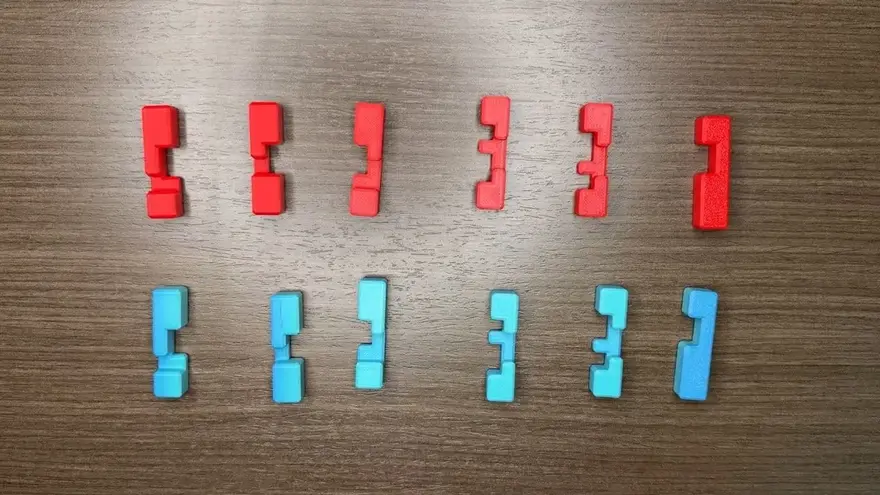

How to Solve the Bambu Lab Burr Puzzle (Step-by-Step Assembly Guide)
My 2:44 video walkthrough for assembling the six-piece Bambu Lab Burr Puzzle, filmed overhead and solved twice, with links that jump straight to each part of the solution.


I printed the Burr Puzzle on my Bambu Lab printer and figured putting it together would be easy. It wasn’t. Six pieces turned out to be a lot more complicated than I expected.
I looked for video tutorials, but the ones I found were hard to follow. So I made my own.
The goal was a simple, clear demonstration you can follow while you assemble the puzzle yourself. I filmed it from directly overhead and solved it twice: first with a teal set of pieces, then with a red set. If the first walkthrough doesn’t click, the second gives you another look at the same solution.
What you’ll learn
The video shows how each of the six pieces is oriented and how they interlock, from loose pieces on the table to a finished puzzle. Both sets start laid out side by side. I assemble the teal puzzle first, then repeat the whole solution with the red pieces.
Jump to the solution
- 0:00 Introduction and piece layout
- 0:33 First assembly walkthrough (teal puzzle)
- 1:44 Second assembly walkthrough (red puzzle)
- 2:30 Final assembly and completed puzzles
Each link starts the video above at that point. Open it in a new tab to watch on YouTube instead.
Helpful tips
- Lay out your pieces the way I do at the start. Same order, same orientation. It makes it much easier to tell which piece I’m picking up.
- Pause between steps. Get each piece into the same position as mine before you move on. Slowing the playback speed on YouTube helps too.
- Watch it again in red. If a step doesn’t make sense the first time, jump to the second walkthrough at 1:44 and follow the red pieces.
- Still stuck? Leave a comment on the video with the timestamp where you got lost, and I’ll do my best to help.
Watch it on YouTube
If this helped you solve your puzzle, the original video is on YouTube. I post hands-on builds and technology experiments on my channel, and you can see more of what I’ve been testing on Building and in my Writing.
This is my own walkthrough of a puzzle I printed. It isn’t an official Bambu Lab tutorial, and I’m not affiliated with Bambu Lab.